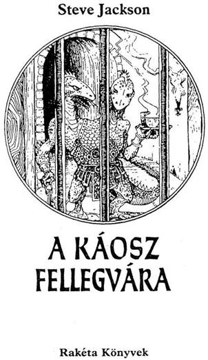
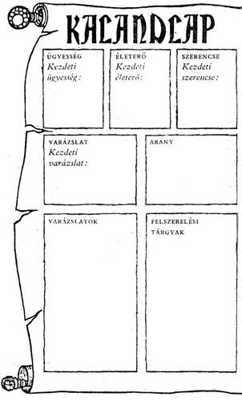
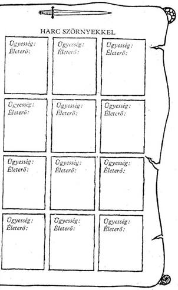
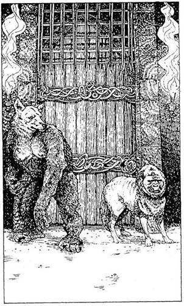

A mű eredeti címe:
The Citadel of Chaos
Első kiadás:
Penguin Books Ltd, Harmondsworth,
Middlesex, England
Russ Nicholson illusztrációival
Fordította:
Varsányi Mária
© Copyright Steve Jackson, 1983
Hungarian translation Varsányi Mária, 1990
A VARÁZSLAT HASZNÁLATA
ÜGYESSÉG, ÉLETERŐ és SZERENCSE pontjaid meghatározása után VARÁZSLAT pontjaidat is meg kell állapítanod.
Dobj két kockával. A kapott számhoz adj hozzá hatot, és az összeget jegyezd be Kalandlapod VARÁZSLAT rovatába.
VARÁZSLAT pontjaid száma határozza meg, hányszor varázsolhatsz kalandod során. A következő fejezetben felsorolt varázslatok közül választhatod ki a kedvedre valókat. Miután ezt megtetted, vezesd fel őket a Kalandlapodra.
Ha például 4-et és 3-at dobsz, akkor VARÁZSLAT számaid összege 13 lesz (4 + 3 + 6), ami annyit jelent, hogy tizenháromszor varázsolhatsz a játék során. A felsorolt varázslatok listájáról tizenhárom kedvedre való varázslatot választhatsz. Elképzelhető, hogy három Életerő Varázslatot, öt K.É.K. Varázslatot és öt Tűzvarázslatot fogsz választani, de az is lehet, hogy inkább tizenkét különböző varázslatot választasz, plusz egy Teremtmény Hasonmás Varázslatot. Te döntöd el, mit választasz. Minden alkalommal, amikor varázsolsz egyet, az adott varázslatot ki kell húznod a Kalandlapodról (még akkor is, ha nem jártál sikerrel). Ha egy bizonyos varázslatfajtából többet választasz, minden alkalommal fel kell jegyezned a Kalandlapra, ha egyet elhasználsz közülük. Néha lehetőséget kapsz rá, hogy varázsolj, de kiderül, hogy azzal a bizonyosfajta varázslattal nem rendelkezel, vagy azért, mert nem azt választottad, vagy azért, mert az a varázslatod már elfogyott. Ilyen esetben nem élhetsz ezzel a lehetőséggel.
Minthogy fogalmad sincs, milyen veszélyek leselkednek rád a Fellegvárban, mikor átléped a küszöbét, kezdetben előfordulhat, hogy olyan varázslatokat alkalmazol, amelyek nem lesznek eléggé hatásosak. A későbbi kalandok során azonban már okosabb leszel. Akkor se aggódj, ha VARÁZSLAT pontjaid száma túl alacsony. Még a legalacsonyabb pontszám mellett is elegendő varázslattal fogsz rendelkezni ahhoz, hogy utadat sikerrel végigjárd, ha jól választasz és némi Szerencse is kísér!
VARÁZSLATOK
TEREMTMÉNY HASONMÁS VARÁZSLAT
Ezzel a varázslattal bármely teremtmény alakját felveheted, amely ellen éppen harcolsz. A hasonmás ÉLETERŐ és ÜGYESSÉG pontjainak száma megegyezik majd az eredeti teremtmény ugyanezen pontjainak számával. A hasonmás azonban a te akaratod szerint fog cselekedni, így például utasíthatod, hogy harcoljon az eredeti teremtmény ellen, te meg nyugodtan végignézheted a csatát!
K.É.K. (KÜLÖNLEGES ÉRZÉKELŐ KÉSZSÉG)
VARÁZSLAT
E varázslat segítségével képes leszel bizonyos dolgokat megfejteni. Például kitalálhatod egy teremtmény gondolatait, vagy azt, hogy mi van egy ajtó mögött. De az is előfordulhat, hogy megérzéseid hamisak lesznek, különösen akkor, ha mondjuk egynél több teremtménnyel állsz szemben.
TŰZ VARÁZSLAT
Minden teremtmény fél a tűztől, és te ezzel a varázslattal tüzet tudsz előidézni. Kisebbfajta robbanást okozhatsz, így néhány másodpercig tartó tűz keletkezik, vagy lángfalat varázsolhatsz, amellyel sakkban tarthatod az ellenséget.
HAMIS ARANY VARÁZSLAT
Ezzel a varázslattal egy közönséges kődarabot aranynak látszó halommá tudsz varázsolni. Ez ugyan Pusztán az Illúzió Varázslat egyik változata - bár annál sokkal megbízhatóbb -‚ és az aranyhalom hamarosan visszaváltozik kővé.
ILLÚZIÓ VARÁZSLAT
Ez nagyon hatásos varázslat, de kissé megbízhatatlan. Ezzel a varázslattal meggyőzően tudsz olyan illúziót kelteni, amellyel becsaphatod a teremtményt (pl. kígyóvá változol, vagy a földet parázsló szén borítja be). A varázslat azonnal megszűnik, mihelyt olyasmi történik, ami megtöri (pl. meggyőzöd a teremtményt, hogy kígyóvá változtál, majd hirtelen rácsapsz a fejére a kardoddal!). Ez a leghatásosabb módszer az intelligens teremtményekkel szemben.
SÚLYTALANSÁG VARÁZSLAT
Ezt a Varázslatot tárgyakra, ellenfelekre, sőt még saját magadra is alkalmazhatod. Akit vagy amit ez a varázslat ér, az megszabadul a gravitációs erőtől, és lebegni kezd. Te döntöd el, kivel vagy mivel szemben alkalmazod ezt a varázslatot.
SZERENCSE VARÁZSLAT
Ezt a varázslatot, éppúgy, mint az Életerő vagy Ügyesség Varázslatot, bármikor használhatod kalandjaid során, kivéve akkor, ha harcolsz. Nem kell külön utasításra várnod. Ez a varázslat Kezdeti SZERENCSE pontjaid felével fogja növelni SZERENCSE pontjaid számát (ha Kezdeti SZERENCSE pontjaid száma páratlan, vonj le még külön 1/2 pontot). SZERENCSE pontjaid száma e varázslat alkalmazásakor sem lépheti túl a Kezdeti értéket még akkor sem, ha két Szerencse Varázslatot alkalmazol egyszerre.
VÉDELEM VARÁZSLAT
Ha ezt a varázslatot alkalmazod, egy láthatatlan pajzs fog eléd emelkedni, mely megvéd majd tárgyaktól - pl. nyíltól, kardtól - vagy teremtményektől. Varázslattal szemben e védelem hatástalan, és ha kívülről nem érhet hozzád semmi, akkor természetesen te sem tudsz hozzáérni semmihez, ami e pajzs előtt van.
ÜGYESSÉG VARÁZSLAT
Ezzel a varázslattal ÜGYESSÉG pontjaid számát azok Kezdeti értékének felével növelheted, és bármikor alkalmazhatod, kivéve csata közben. A pontos szabály leírását lásd a SZERENCSE VARÁZSLAT címszó alatt. Az Ügyesség Varázslat alkalmazásakor is ez a szabály érvényes.
ÉLETERŐ VARÁZSLAT
Ezzel a varázslattal ÉLETERŐ pontjaid számát azok Kezdeti értékének a felével növelheted, és bármikor alkalmazhatod, kivéve csata közben. A szabály pontos leírását lásd a SZERENCSE VARÁZSLAT címszó alatt.
ERŐVARÁZSLAT
Ezzel a varázslattal nagymértékben növelheted erődet, melynek nagy hasznát veheted harc közben. Ugyanakkor azonban igen óvatosnak kell lenned alkalmazásakor, mivel elég nehéz saját erőd hirtelen növekedését szabályozni!
ERŐTLENSÉG VARÁZSLAT
Az erős teremtmények e varázslat hatására elgyöngülnek. Nem minden teremtménnyel szemben hatásos ez a varázslat, de ha hat, akkor az illető teremtmény vézna nyápiccá változik, akinek nem sok esélye marad rá, hogy egy csatát megnyerjen.
FELSZERELÉS
Kalandodat igen kevés felszerelési tárggyal kezded. Van egy kardod, és bőrpáncélzatot viselsz. Van egy lámpásod, mellyel megvilágíthatod magadnak az utadat, valamint egy hátizsákod, melybe kincseidet rakhatod, vagy azokat a tárgyakat, amelyekre utad során teszel majd szert. Tárgyaidat mindenkor jegyezd be, a Kalandlapodon lévő
"Felszerelési tárgyak" rovatba. Ha ezek közül bármelyiket használni fogod utad során, a történetből megtudod, vajon melyik semmisült meg vagy veszett el. Ilyenkor mindig jelöld a hiányt a Kalandlapon, és a kihúzott tárgyakat többé nem használhatod.


Háttértörténet
Fűz Völgy törvénytisztelő és jóságos népe közel nyolc éve fél és retteg a gonosz varázslótól, Balthustál. Retteg, mert ennek az embernek az ereje valóban rettenetes, és fél, mivel híre járt, hogy Balthus a Völgyben akarja elkezdeni hódító tervei végrehajtását.
Egy hűséges fél-elf, akit kémkedni küldtek a Fekete Toronyba, három nappal ezelőtt vágtatva érkezett vissza a vészjósló figyelmeztetéssel. Kiderült, hogy Balthus a Sziklaszirt Hegység barlangjaiban hadsereget toborzott a Kaotikusok népéből, s arra képezi ki az újoncait, hogy három héten belül támadást intézzenek a Völgy ellen.
Salamon, a jó király, a tettek embere volt. Még aznap küldöncöket menesztett mindenhová a Völgyben, hegy kezdődjék meg a védővonalak építése, és a férfinép jelentkezzék hadi szolgálatra. Lovasok indultak a yore-i Nagyerdőben élő fél-elfekhez azzal a felhívással, hogy alakuljon harci szövetség. Salamon király, bölcs ember lévén, azt is tudta, hogy a hír óhatatlanul eléri Yore Nagy Varázslóját, ezt a nagy hatalmú embert, aki az erdő mélyén él. A varázsló öreg ember, aki ilyen nagy csatát nem élne túl. De számos ifjú varázslót kitanított, és elképzelhető, hogy bűvtudományának egyik bátor és igyekvő követője a király és alattvalói segítségére siet.
Nos, te vagy Yore Nagy Varázslójának kedvenc tanítványa. Az öreggel nem volt könnyű kijönni, de te mindent megtettél, hogy a lehető legtöbbet elsajátítsd a tudományából. Talán egy kicsit hebehurgyán döntöttél, amikor nyomban elindultál Salamon király udvarába. A király lelkesen fogadott, és elmagyarázta, mit tervez. Azt mondta, nem kell vérnek folynia, el lehet kerülni a csatát, feltéve, hogy Balthus ellen valaki merényletet követ el, még mielőtt a gonosz varázsló egybegyűjtené csapatát.
A feladat, amelyet vállaltál, rendkívül veszedelmes. Balthust seregnyi visszataszító teremtmény veszi körül Fellegvárában. Bár fő fegyvered a varázslat, lesz olyan pillanat, amikor a kardodon kívül semmi nem segít, hogy életben maradj.
Salamon király elmondta, mi a dolgod, és figyelmeztetett, milyen veszélyekkel kell számolnod. Egyetlen helyes út vezet át a Fellegváron. Ha felfedezed, melyik az, csak igen kis mértékben kockáztatod az életedet.
De megeshet, hogy jó néhányszor nekivágsz, míg megleled a legjobb átjárót.
Fűzfa Völgyből hosszú út vezet a Fekete Toronyhoz. A Sziklaszirt Hegység lábánál azonban a sötét háttérből lassan kirajzolódnak a Torony körvonalai…
És most lapozz az 1-re!
